How to install Harbour on Ubuntu
Table of Contents
- Introduction
- Download Harbour Core
- Compiling Harbour under Linux
- Installing Harbour on Linux
- Testing the installation for Harbour, Hello World
- Some Improvements to the Basic Install
- Installation Script Source Code
- An Additional Improvement
- Source Code of hbit1
- Source Code of hbit2
- Source Code of hbv1
- Source Code of hbv2
- Conclusion
Introduction
You can find a generic description of how to build Harbour from source at its master GitHub repository: https://github.com/harbour/core#how-to-build
Essentially,
the Harbour compiler takes PRG files, creates C source code equivalent
files, and then uses a C compiler and linker to create the actual
binaries.
While there are many benefits of using Harbour, In this
article I would rather not focus on the benefits of Harbour in the way
it generates C code and produces executables that are protected from
decompilation. Additionally, while I enjoy free programs and free
code, these are not the reasons for which I have decided to use Harbour.
Harbour is the only xBase compiler that is completely open source, 100% free, is both 32 and 64 bit, and runs on all platforms that C can run on, to include Windows, DOS, MacOS, Unix, and Linux. Aside from the fact that it is an xBase compiler, the main reason for me to use Harbour is that it runs on Linux.
You can build for both 32 bit and 64 bit, but honestly, I think 32 bit could eventually be completely abandoned as Ubuntu will abandon it for the 19.10 build and other distributions may too.
Download Harbour Core
You have two ways to keep the Harbour source.
The first way which is often typical for Windows, and is usable under Linux, is to download the Zip file. In our case, there is no need to install something to extract it, as Linux has already tools to do that.
sudo apt install git
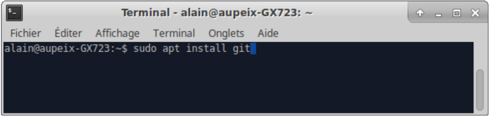
You can then clone the Harbour repository (code) in any directory you want. The simplest location is under your home directory, but you can locate it anywhere you want.
Perhaps, due to my special way of thinking, I place it under /opt/TuxPrograms/trunks/.
cd /opt
sudo chown -R $USER:$USER TuxPrograms
chmod -R 775 TuxPrograms
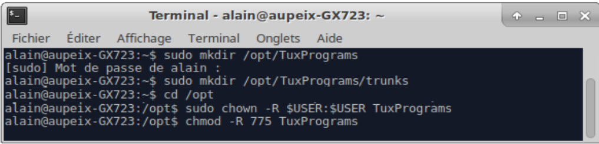
After having created your folders, you can clone the source as such:
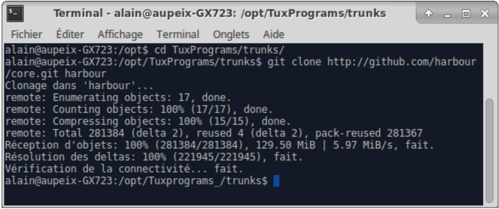
Before explaining how to build the Harbour source, I must explain the advantage of using git. When you use git, you only have to update the local folder, and not download a Zip file, which is faster.
Compiling Harbour under Linux
Before compiling Harbour, you must install some prerequisites to be able to build Harbour. To do so, execute the following command.
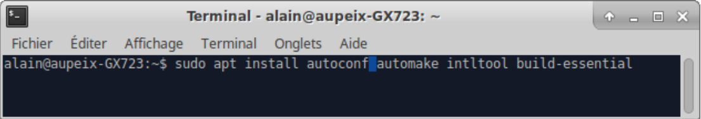
Here is the command that I use to install them (a maximum of the available contribs). Some packages are perhaps out of date due to Linux update.
To install contribs:
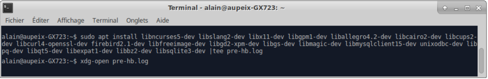
As you can see, its just a simple command line : make.
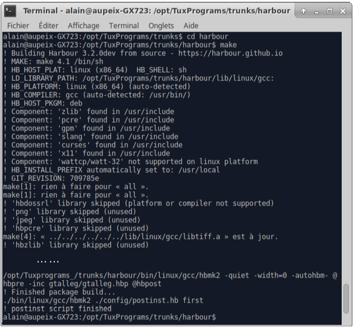
Installing Harbour on Linux
Before testing Harbour, we will install it in the system. Here too, it’s just a simple command line :
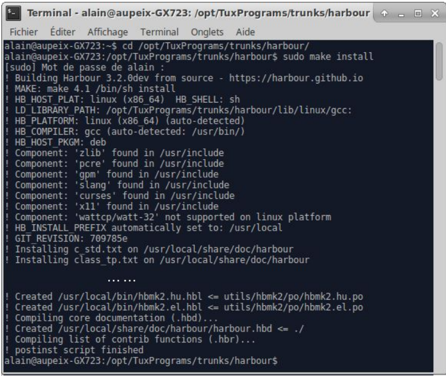
Testing the installation for Harbour, Hello World
An easy way to verify your installation was successfully done, is to try to compile and run a very simple "Hello World" program.
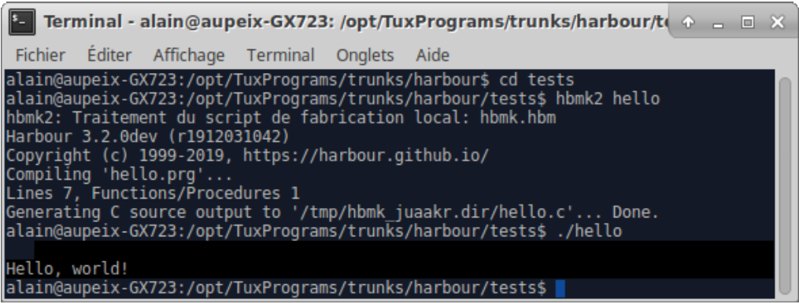
Some Improvements to the Basic Install
Before using this script, there are some prerequisites to install :
To be able to create Harbour deb, you need to install, if not already made by the program which allows us to bypass root rights to create a deb (fakeroot)
To be able to install HwGui and build using HwGui, you need to install some packages : lintian to build HwGui deb and libgtk2.0-dev to build using HwGui (not too sure, as I often refer here to Ubuntu 12.04, which is a little out of date).
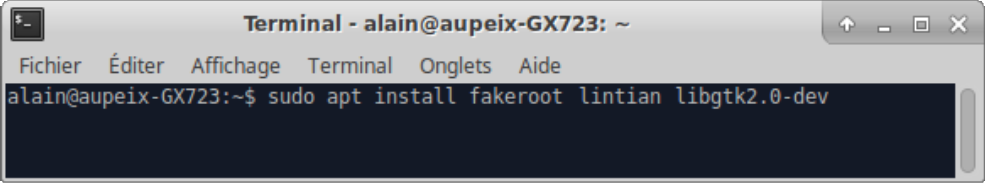
The first one is just a complete script bash to update (or install) a local Harbour installation and local HwGui installation . It also allows us to build Debian installation packages (debs) for Harbour and/or HwGui.
The value assigned to Mypath is the folder location of your Harbour source folder. If you have chosen the same folder as me, the parameter is already set.
chmod +x jharbour
sudo mv jharbour /usr/local/bin
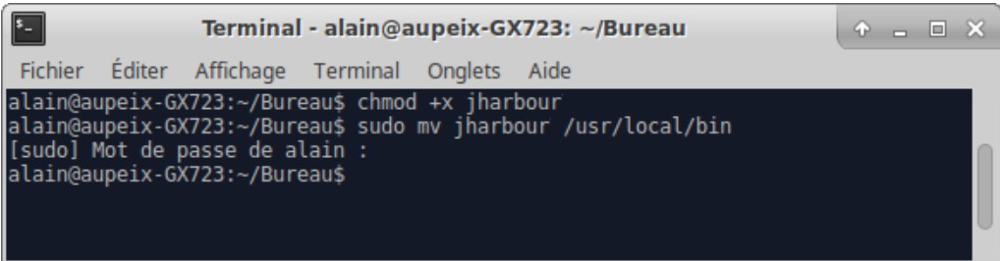
Installation Script Source Code

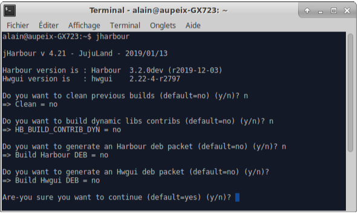
| File: jharbour |
#!/bin/bash# A script to clean, build and install Harbour and Hwgui under Linux in /usr# Just set the variable MyPath to be able to use this shell# -- Chemin d'accès au répertoire local de Harbour ------------------------#export MyPath="/opt/TuxPrograms/trunks"# -- nom utilisateur ------------------------#export MyName=$USER# -- harbour --------------------------------#export HB_INSTALL_PREFIX="/usr"export HB_WITH_PCRE=localexport HB_WITH_ZLIB=localexport HB_WITH_LIBHARU=local# -- hwgui ---------------------------------#export HB_ROOT="$MyPath/harbour"export HRB_BIN="/usr/bin"export HRB_INC="/usr/include/harbour"export HRB_LIB="/usr/lib/harbour"#------------------------#export jversion="4.21"export jdate="2019/01/13"#------------------------## Test bureauif [[ `ps aux | grep -e "[g]nome-settings-daemon"` ]]; then MyEditor="gedit" MyExplorer="nautilus"elif [[ `ps aux | grep -e "[k]ded4" ` && ! `ps aux | grep -e "[g]nome-settings-daemon" ` ]]; then MyEditor="kate" MyExplorer="dolphin"elif [[ `ps aux | grep -e "[x]fsettingsd" ` ]]; then MyEditor="mousepad" MyExplorer="thunar"elif [[ `ps aux | grep -e "[l]xsession" ` ]]; then MyEditor="leafpad" MyExplorer="pcmanfm"else MyEditor="gedit" MyExplorer="nautilus"fieditsh="No"if test -z $MyPath;then export editsh="";else if test -z $MyExplorer;then export editsh=""; else if test -z $MyEditor;then export editsh=""; fi fifiif test -z $editsh;then clear echo "jHarbour v $jversion - JujuLand - $jdate" echo " " echo "Vous avez oublié de paramétrer une variable nécessaire poue exécuter ce script." echo "Veuillez procéder à ce paramétrage, avant de relancer ce script." echo " " echo "Appuyez sur une touche pour continuer ..." read echo "Après, vous pourrez lancer jharbour de nouveau ..." echo " " if test -z $(which jharbour); then nano $0 else sudo nano $(which jharbour) fi exitficlearbegin=$(date)echo jHarbour v $jversion - JujuLand - $jdate |tee $MyPath/jharbour.logecho " "echo "Harbour version is : $(hbmk2 --version|grep '3.2'|cut -f1,2,3,4|awk '{print $1" "$4" "$5")"}')"echo "Hwgui version is : $(dpkg -l|grep hwgui|cut -f1,2,3,4|awk '{print $2" "$3}')"echo " "echo -n "Do you want to clean previous builds (default=no) (y/n)? "read cleanif test -z $clean;then export clean="n";fiif test $clean = "n"; then export clean="no"else export clean="yes"fiecho "=> Clean = "`echo $clean` |tee -a $MyPath/jharbour.logecho " "echo -n "Do you want to build dynamic libs contribs (default=no) (y/n)? "read HB_BUILD_CONTRIB_DYNif test -z $HB_BUILD_CONTRIB_DYN;then export HB_BUILD_CONTRIB_DYN="n";fiif test $HB_BUILD_CONTRIB_DYN = "n"; then export HB_BUILD_CONTRIB_DYN="no"else export HB_BUILD_CONTRIB_DYN="yes"fiecho "=> HB_BUILD_CONTRIB_DYN = "`echo $HB_BUILD_CONTRIB_DYN` |tee -a $MyPath/jharbour.logecho " "echo -n "Do you want to generate an Harbour deb packet (default=no) (y/n)? "read HB_BUILD_DEBif test -z $HB_BUILD_DEB; then export HB_BUILD_DEB="n";fiif test $HB_BUILD_DEB = "n"; then export HB_BUILD_DEB="no"else export HB_BUILD_DEB="yes" # removing last deb files cd $MyPath for var in `ls -1 *harbour*.deb 2>/dev/null` do rm $var 2>/dev/null donefiecho "=> Build Harbour DEB = "`echo $HB_BUILD_DEB` |tee -a $MyPath/jharbour.logecho " "if test $HB_BUILD_DEB = "yes"; then echo -n "Do you want to install Harbour deb packet (default=no) (y/n)? " read HB_INSTALL_DEB if test -z $HB_INSTALL_DEB; then export HB_INSTALL_DEB="n"; fi if test $HB_INSTALL_DEB = "n"; then export HB_INSTALL_DEB="no" else export HB_INSTALL_DEB="yes" fi echo "=> Install Harbour DEB = "`echo $HB_INSTALL_DEB` |tee -a $MyPath/jharbour.log echo " "fiecho -n "Do you want to generate an Hwgui deb packet (default=no) (y/n)? "read HW_BUILD_DEBif test -z $HW_BUILD_DEB; then export HW_BUILD_DEB="n";fiif test $HW_BUILD_DEB = "n"; then export HW_BUILD_DEB="no"else export HW_BUILD_DEB="yes" # removing last deb files cd $MyPath for var in `ls -1 hwgui*.deb 2>/dev/null` do rm $var 2>/dev/null donefiecho "=> Build Hwgui DEB = "`echo $HW_BUILD_DEB` |tee -a $MyPath/jharbour.logecho " "if test $HW_BUILD_DEB = "yes"; then echo -n "Do you want to install Hwgui deb packet (default=no) (y/n)? " read HW_INSTALL_DEB if test -z $HW_INSTALL_DEB; then export HW_INSTALL_DEB="n"; fi if test $HW_INSTALL_DEB = "n"; then export HW_INSTALL_DEB="no" else export HW_INSTALL_DEB="yes" fi echo "=> Install Hwgui DEB = "`echo $HW_INSTALL_DEB` |tee -a $MyPath/jharbour.log echo " "fiecho -n "Are-you sure you want to continue (default=yes) (y/n)? "read confirmif test -z $confirm; then export confirm="y";fiif test $confirm = "n"; then exitfi# We build Harbour & HwguibuildHarbour="yes"buildHwgui="yes"clearif test -d $MyPath/harbour/.git; then if !(test -e $MyPath/hbv1); then # hbv1 echo "/*" > $MyPath/hbv1 echo "* Harbour Project source code:" >> $MyPath/hbv1 echo "* Header file to help catch reserved keywords" >> $MyPath/hbv1 echo "*" >> $MyPath/hbv1 echo "* Copyright 2015-2019 Alain Aupeix" >> $MyPath/hbv1 echo "*/" >> $MyPath/hbv1 echo "" >> $MyPath/hbv1 echo "#ifndef Harbour_Version " >> $MyPath/hbv1 # hbv2 echo "#endif /* Harbour_Version */" > $MyPath/hbv2 # hbit1 echo "/*" > $MyPath/hbit1 echo "* Harbour Project source code:" >> $MyPath/hbit1 echo "* Header file to help catch reserved keywords" >> $MyPath/hbit1 echo "*" >> $MyPath/hbit1 echo "* Copyright 2015-2019 Alain Aupeix" >> $MyPath/hbit1 echo "*/" >> $MyPath/hbit1 echo "" >> $MyPath/hbit1 echo "#ifndef Harbour_Version " >> $MyPath/hbit1 # hbit2 echo "#endif /* Harbour_Version */" > $MyPath/hbit2 fi if !(test -e $MyPath/harbour/addons/hwgui-src/hbg1); then # hbg1 echo "/*" > $MyPath/harbour/addons/hwgui-src/hbg1 echo "* Harbour Project source code:" >> $MyPath/harbour/addons/hwgui-src/hbg1 echo "* Header file to help catch reserved keywords" >> $MyPath/harbour/addons/hwgui-src/hbg1 echo "*" >> $MyPath/harbour/addons/hwgui-src/hbg1 echo "* Copyright 2015-2019 Alain Aupeix" >> $MyPath/harbour/addons/hwgui-src/hbg1 echo "*/" >> $MyPath/harbour/addons/hwgui-src/hbg1 echo "" >> $MyPath/harbour/addons/hwgui-src/hbg1 echo "#ifndef HwGui_Rev " >> $MyPath/harbour/addons/hwgui-src/hbg1 # hbg2 echo "#endif /* HwGui_Rev */" > $MyPath/harbour/addons/hwgui-src/hbg2 fi if test $clean = "yes"; then cd $MyPath/harbour echo "###########################" |tee -a $MyPath/jharbour.log echo "# Cleaning .hbmk folder #" |tee -a $MyPath/jharbour.log echo "###########################" |tee -a $MyPath/jharbour.log if test -d $MyPath/harbour/lib/linux/gcc/libharbour.so; then echo "# Cleaning gcc lib folder $MyPath/harbour/lib/linux/gcc" |tee -a $MyPath/jharbour.log sudo rm $MyPath/harbour/lib/linux/gcc/* 2>/dev/null fi if test -d $MyPath/harbour/lib/linux/gcc/.hbmk; then sudo rm -R $MyPath/harbour/lib/linux/gcc/.hmbk 2>/dev/null fi if test -d $MyPath/harbour/bin/linux/gcc/hhmk2; then echo "# Cleaning gcc bin folder $MyPath/harbour/bin/linux/gcc" |tee -a $MyPath/jharbour.log sudo rm $MyPath/harbour/bin/linux/gcc/* 2>/dev/null sudo rm -R $MyPath/harbour/bin/linux/gcc/.hmbk 2>/dev/null fi fi echo "####################################" |tee -a $MyPath/jharbour.log echo "# Updating local Harbour sources #" |tee -a $MyPath/jharbour.log echo "####################################" |tee -a $MyPath/jharbour.log cd $MyPath/harbour git pull 2>&1 |tee -a $MyPath/jharbour.log # test if updated noHarbour=$(head -n20 $MyPath/jharbour.log |grep 'Already up-to-date'|wc -l) if [ "$noHarbour" = "1" ] && [ "$clean" != "yes" ]; then buildHarbour="no" fi if [ $buildHarbour = "yes" ]; then if test $clean = "yes"; then cd $MyPath/harbour echo "######################" |tee -a $MyPath/jharbour.log echo "# Cleaning harbour #" |tee -a $MyPath/jharbour.log echo "######################" |tee -a $MyPath/jharbour.log make clean 2>&1 |tee -a $MyPath/jharbour.log else rm include/hbverbld.h fi rm $MyPath/harbour/bin/linux/gcc/hbmk2 if test -e $MyPath/hbmk2.fr.po; then echo Updating hbmk2.po |tee -a $MyPath/jharbour.log cp $MyPath/hbmk2.fr.po $MyPath/harbour/utils/hbmk2/po fi fielse cd $MyPath echo "####################################" |tee -a $MyPath/jharbour.log echo "# Creating local Harbour sources #" |tee -a $MyPath/jharbour.log echo "####################################" |tee -a $MyPath/jharbour.log git clone http://github.com/harbour/core.git harbour |tee -a $MyPath/jharbour.logfi#fiecho "##################################" |tee -a $MyPath/jharbour.logecho "# Updating local hwgui sources #" |tee -a $MyPath/jharbour.logecho "##################################" |tee -a $MyPath/jharbour.logif !(test -e $MyPath/harbour/addons/hwgui-src/.svn/entries); then mkdir $MyPath/harbour/addons mkdir $MyPath/harbour/addons/hwgui-src |tee -a $MyPath/jharbour.log sudo mkdir /usr/lib/hwgui |tee -a $MyPath/jharbour.log sudo mkdir /usr/include/hwgui |tee -a $MyPath/jharbour.logficd $MyPath/harbour/addons/hwgui-srcsvn co http://svn.code.sf.net/p/hwgui/code/trunk . 2>&1 |tee -a $MyPath/jharbour.logexport HW_REV=$(cat $MyPath/jharbour.log|grep vision|awk {'print $2'})export HW_VERS=$(head -n7 hwgui/whatsnew.txt | grep HWGUI | grep -v Win32 | sed 's/HWGUI //'|sed 's/ build /-/'|awk '{print $1}')if !(test -e $MyPath/harbour/addons/hwgui-src/hwgui/obj); then mkdir $MyPath/harbour/addons/hwgui-src/hwgui/objfiif !(test -e $MyPath/harbour/addons/hwgui-src/hwgui/lib); then mkdir $MyPath/harbour/addons/hwgui-src/hwgui/libfiif test $clean = "yes"; then echo "####################" |tee -a $MyPath/jharbour.log echo "# Cleaning Hwgui #" |tee -a $MyPath/jharbour.log echo "####################" |tee -a $MyPath/jharbour.log cd $MyPath/harbour/addons/hwgui-src/hwgui 2>/dev/null rm -fR lib/* obj/* 2>/dev/null cd $MyPath/harbour/addons/hwgui-src/hwgui/utils/tutorial 2>/dev/null rm -fR lib/ obj/ 2>/dev/nullfiif [ $buildHarbour = "yes" ]; then echo "####################" |tee -a $MyPath/jharbour.log echo "# Making harbour #" |tee -a $MyPath/jharbour.log echo "####################" |tee -a $MyPath/jharbour.log cd $MyPath/harbour make 2>&1 |tee -a $MyPath/jharbour.log echo "# Creating include file for harbour rev" |tee -a $MyPath/jharbour.log if !(test -e ../hbv1); then # hbv1 echo "/*" > ../hbv1 echo "* Harbour Project source code:" >> ../hbv1 echo "* Header file to help catch reserved keywords" >> ../hbv1 echo "*" >> ../hbv1 echo "* Copyright 2015-2019 Alain Aupeix" >> ../hbv1 echo "*/" >> ../hbv1 echo "" >> ../hbv1 echo "#ifndef Harbour_Version" >> ../hbv1 # hbv2 echo "#endif /* Harbour_Version */" > ../hbv2 fi if !(test -e ../hbit1); then # hbit1 echo "/*" > ../hbit1 echo "* Harbour Project source code:" >> ../hbit1 echo "* Header file to help catch reserved keywords" >> ../hbit1 echo "*" >> ../hbit1 echo "* Copyright 2017-2019 Alain Aupeix" >> ../hbit1 echo "*/" >> ../hbit1 echo "" >> ../hbit1 echo "#ifndef Harbour_bits" >> ../hbit1 # hbit2 echo "#endif /* Harbour_bits */" > ../hbit2 fi cat ../hbv1 > harbour_version.ch echo ' #define Harbour_Version "'$(hbmk2 --version|grep "(r" |sed 's/Make (hbmk2) //')'"'>>harbour_version.ch cat ../hbv2 >> harbour_version.ch sudo cp harbour_version.ch /usr/include/harbour/hbversion.ch echo "# Creating include file for harbour bits" |tee -a $MyPath/jharbour.log cat ../hbit1 > harbour_bits.ch echo ' #define Harbour_bits "'$(uname -p|sed 's|\x010||g')'"'>>harbour_bits.ch cat ../hbit2 >> harbour_bits.ch sudo cp harbour_bits.ch /usr/include/harbour/hb_bits.ch echo "########################" |tee -a $MyPath/jharbour.log echo "# Installing Harbour #" |tee -a $MyPath/jharbour.log echo "########################" |tee -a $MyPath/jharbour.log sudo -E make install 2>&1 |tee -a $MyPath/jharbour.logfiecho "##################" |tee -a $MyPath/jharbour.logecho "# Making Hwgui #" |tee -a $MyPath/jharbour.logecho "##################" |tee -a $MyPath/jharbour.logcd $MyPath/harbour/addons/hwgui-src/hwgui/source/gtkmake -e -fMakefile.linux 2>&1 |tee -a $MyPath/jharbour.logcd $MyPath/harbour/addons/hwgui-src/hwgui# test if updatednoHwgui=$(tail $MyPath/jharbour.log |grep 'make: Rien à faire pour « all ».'|wc -l)if [ "$noHwgui" = "1" ] && [ "$clean" != "yes" ]; then buildHwgui="no"fiif [ $buildHwgui = "yes" ]; then echo "######################" |tee -a $MyPath/jharbour.log echo "# Installing Hwgui #" |tee -a $MyPath/jharbour.log echo "######################" |tee -a $MyPath/jharbour.log cd $MyPath/harbour/addons/hwgui-src/hwgui/lib if !(test -d /usr/share/hwgui); then sudo mkdir /usr/share/hwgui fi if !(test -d /usr/lib/hwgui); then sudo mkdir /usr/lib/hwgui fi echo "# Copying libs from $MyPath/harbour/addons/hwgui-src/hwgui/lib" |tee -a $MyPath/jharbour.log sudo cp *.a /usr/lib/hwgui cd ../include echo "# Creating include file for hwgui rev" |tee -a $MyPath/jharbour.log if !(test -d /usr/include/hwgui); then sudo mkdir /usr/include/hwgui fificat $MyPath/harbour/addons/hwgui-src/hbg1 > hwgui_rev.checho ' #define HwGui_Rev "'$HW_REV'"'>>hwgui_rev.chcat $MyPath/harbour/addons/hwgui-src/hbg2 >> hwgui_rev.chif [ $buildHwgui = "yes" ]; then echo "# Copying h and ch files from $MyPath/harbour/addons/hwgui-src/hwgui/include" |tee -a $MyPath/jharbour.log sudo cp *.h /usr/include/hwgui sudo cp *.ch /usr/include/hwgui sudo cp sudo cp $MyPath/harbour/addons/hwgui-src/hwgui/utils/editor/hcedit.ch /usr/include/hwgui echo "# Copying hwgrun from $MyPath/harbour/addons/hwgui-src/hwgui/util/tutorial" |tee -a $MyPath/jharbour.log cd $MyPath/harbour/addons/hwgui-src/hwgui/utils/tutorial hwbuild hwgrun 2>&1 |tee -a $MyPath/jharbour.log hwbuild tutor 2>&1 |tee -a $MyPath/jharbour.log sudo cp hwgrun /usr/binfiif test $HB_BUILD_DEB = "yes"; then echo "###############################" |tee -a $MyPath/jharbour.log echo "# Creating harbour packages #" |tee -a $MyPath/jharbour.log echo "###############################" |tee -a $MyPath/jharbour.log cd $MyPath/harbour fakeroot debian/rules binary 2>&1 |tee -a $MyPath/jharbour.log retour=$? if test $retour -gt 0;then echo " " |tee -a $MyPath/jharbour.log echo "################################################# #" |tee -a $MyPath/jharbour.log echo "# /\/\/\/\/\/\/\/\/\/\/\/\/\/\/\/\/\/\/\/\/\/\/\ #" |tee -a $MyPath/jharbour.log echo "# | Warning : Error creating Harbour deb files | #" |tee -a $MyPath/jharbour.log echo "# \/\/\/\/\/\/\/\/\/\/\/\/\/\/\/\/\/\/\/\/\/\/\/ #" |tee -a $MyPath/jharbour.log echo "###################################################" |tee -a $MyPath/jharbour.log exit fi cd $MyPath if !(test -d hb_debs); then mkdir hb_debs fi echo " " |tee -a $MyPath/jharbour.log echo "=> Preserving harbour deb files in $PWD/hb_debs" |tee -a $MyPath/jharbour.log export rev=`$MyPath/harbour/bin/linux/gcc/hbmk2 --version|grep "(r" |sed 's/Harbour Make (hbmk2) 3.2.0dev (//;s/)//;s/ /-/'` for var in `ls -1 *.deb` do cp $var hb_debs/$rev"_"$var done cd $MyPath rm harbour*dbg*.deb if test $HB_INSTALL_DEB = "yes"; then echo "########################" |tee -a $MyPath/jharbour.log echo "# Installing Harbour #" |tee -a $MyPath/jharbour.log echo "########################" |tee -a $MyPath/jharbour.log sudo dpkg -i harbour*.deb 2>&1 |tee -a $MyPath/jharbour.log $MyExplorer $MyPath & fifiif test $HW_BUILD_DEB = "yes"; then echo " " |tee -a $MyPath/jharbour.log echo "#############################" |tee -a $MyPath/jharbour.log echo "# Creating hwgui packages #" |tee -a $MyPath/jharbour.log echo "#############################" |tee -a $MyPath/jharbour.log cd $MyPath/harbour/addons/hwgui-src/hwgui if !(test -d debian); then echo "=> Creating structure" |tee -a $MyPath/jharbour.log mkdir debian 2>&1 mkdir debian/hwgui mkdir debian/hwgui/DEBIAN mkdir debian/hwgui/usr mkdir debian/hwgui/usr/bin mkdir debian/hwgui/usr/include mkdir debian/hwgui/usr/include/hwgui mkdir debian/hwgui/usr/lib mkdir debian/hwgui/usr/lib/hwgui mkdir debian/hwgui/usr/share mkdir debian/hwgui/usr/share/doc mkdir debian/hwgui/usr/share/doc/hwgui mkdir debian/hwgui/usr/share/hwgui mkdir debian/hwgui/usr/share/hwgui/utils mkdir debian/hwgui/usr/share/hwgui/utils/dbc mkdir debian/hwgui/usr/share/hwgui/utils/debugger mkdir debian/hwgui/usr/share/hwgui/utils/editor mkdir debian/hwgui/usr/share/hwgui/utils/tutorial mkdir debian/hwgui/usr/share/hwgui/samples mkdir debian/hwgui/usr/share/hwgui/samples/gtk_samples mkdir debian/hwgui/usr/share/hwgui/hwgui chmod -R 755 debian/hwgui cd debian # hwgui.hbc echo "#" > hwgui.hbc echo "# $Id: hwgui.hbc 2076 2013-06-13 15:37:33Z druzus $" >> hwgui.hbc echo "#" >> hwgui.hbc echo "" >> hwgui.hbc echo "# Include this file in hbmk2 command line to build an app:" >> hwgui.hbc echo "# 'hbmk2 hwgui.hbc test.prg'" >> hwgui.hbc echo "" >> hwgui.hbc echo "incpaths=/usr/include/hwgui" >> hwgui.hbc echo "libpaths=/usr/lib/hwgui" >> hwgui.hbc echo "" >> hwgui.hbc echo "{win}gt=gtgui" >> hwgui.hbc echo "" >> hwgui.hbc echo "libs=hwgui procmisc hbxml hwgdebug" >> hwgui.hbc echo "{win&!allmingw}libs=hbactivex" >> hwgui.hbc echo "" >> hwgui.hbc echo "{unix}ldflags+=\"`pkg-config --libs gtk+-2.0`\"" >> hwgui.hbc # changelog echo "hwgui (2.20-3) stable; urgency=low" > changelog_ echo "" >> changelog_ echo " * 2.20-3" >> changelog_ echo "" >> changelog_ echo " -- Alexander Kresin <alex@belacy.ru> Mon, 17 Sep 2016 13:50:00 +0300" >> changelog_ echo "" >> changelog_ echo "hwgui (2.20-2) stable; urgency=low" >> changelog_ echo "" >> changelog_ echo " * 2.20-2" >> changelog_ echo "" >> changelog_ echo " -- Alexander Kresin <alex@belacy.ru> Mon, 12 Sep 2016 14:15:00 +0300" >> changelog_ echo "" >> changelog_ echo "hwgui (2.20) stable; urgency=low" >> changelog_ echo "" >> changelog_ echo " * 2.20" >> changelog_ echo "" >> changelog_ echo " -- Alexander Kresin <alex@belacy.ru> Fri, 08 Sep 2016 12:00:00 +0300" >> changelog_ echo "" >> changelog_ echo "hwgui (2.19-6) stable; urgency=low" >> changelog_ echo "" >> changelog_ echo " * 2.19-6" >> changelog_ echo "" >> changelog_ echo " -- Alexander Kresin <alex@belacy.ru> Thu, 01 Feb 2016 14:15:00 +0300" >> changelog_ echo "" >> changelog_ echo "hwgui (2.19-5) stable; urgency=low" >> changelog_ echo "" >> changelog_ echo " * 2.19-5" >> changelog_ echo "" >> changelog_ echo " -- Alexander Kresin <alex@belacy.ru> Thu, 21 Jan 2016 09:56:00 +0300" >> changelog_ echo "" >> changelog_ echo "hwgui (2.19-4) stable; urgency=low" >> changelog_ echo "" >> changelog_ echo " * 2.19-4" >> changelog_ echo "" >> changelog_ echo " -- Alexander Kresin <alex@belacy.ru> Thu, 25 Jun 2015 16:00:00 +0300" >> changelog_ echo "" >> changelog_ echo "hwgui (2.19-3) stable; urgency=low" >> changelog_ echo "" >> changelog_ echo " * 2.19-3" >> changelog_ echo "" >> changelog_ echo " -- Alexander Kresin <alex@belacy.ru> Thu, 08 May 2015 14:15:00 +0300" >> changelog_ echo "" >> changelog_ echo "hwgui (2.19-2) stable; urgency=low" >> changelog_ echo "" >> changelog_ echo " * 2.19-2" >> changelog_ echo "" >> changelog_ echo " -- Alexander Kresin <alex@belacy.ru> Thu, 27 Jan 2015 14:56:00 +0300" >> changelog_ echo "" >> changelog_ echo "hwgui (2.19-1) stable; urgency=low" >> changelog_ echo "" >> changelog_ echo " * 2.19" >> changelog_ echo "" >> changelog_ echo " -- Alexander Kresin <alex@belacy.ru> Thu, 20 Dec 2014 13:00:00 +0300" >> changelog_ echo "" >> changelog_ echo "hwgui (2.18-2) stable; urgency=low" >> changelog_ echo "" >> changelog_ echo " * 2.18-2" >> changelog_ echo "" >> changelog_ echo " -- Alexander Kresin <alex@belacy.ru> Thu, 03 Apr 2014 16:58:00 +0300" >> changelog_ echo "" >> changelog_ echo "hwgui (2.18) stable; urgency=low" >> changelog_ echo "" >> changelog_ echo " * 2.18" >> changelog_ echo "" >> changelog_ echo " -- Alexander Kresin <alex@belacy.ru> Thu, 19 Jul 2013 16:58:00 +0300" >> changelog_ echo "" >> changelog_ echo "hwgui (2.17) stable; urgency=low" >> changelog_ echo "" >> changelog_ echo " * 2.17" >> changelog_ echo "" >> changelog_ echo " -- Alexander Kresin <alex@belacy.ru> Thu, 07 Oct 2008 13:00:00 +0300" >> changelog_ echo "" >> changelog_ echo "hwgui (2.16) stable; urgency=low" >> changelog_ echo "" >> changelog_ echo " * 2.16" >> changelog_ echo "" >> changelog_ echo " -- Alexander Kresin <alex@belacy.ru> Thu, 14 Sep 2006 15:05:00 +0300" >> changelog_ echo "" >> changelog_ echo "hwgui (2.15) stable; urgency=low" >> changelog_ echo "" >> changelog_ echo " * 2.15" >> changelog_ echo "" >> changelog_ echo " -- Alexander Kresin <alex@belacy.ru> Thu, 07 Jun 2006 15:05:00 +0300" >> changelog_ echo "" >> changelog_ echo "hwgui (2.14) stable; urgency=low" >> changelog_ echo "" >> changelog_ echo " * 2.14" >> changelog_ echo "" >> changelog_ echo " -- Alexander Kresin <alex@belacy.ru> Thu, 14 Dec 2004 14:25:00 +0300" >> changelog_ echo "" >> changelog_ echo "hwgui (2.13) stable; urgency=low" >> changelog_ echo "" >> changelog_ echo " * 2.13" >> changelog_ echo "" >> changelog_ echo " -- Alexander Kresin <alex@belacy.ru> Thu, 22 Jul 2004 14:25:00 +0300" >> changelog_ echo "" >> changelog_ echo "hwgui (2.12) stable; urgency=low" >> changelog_ echo "" >> changelog_ echo " * 2.12" >> changelog_ echo "" >> changelog_ echo " -- Alexander Kresin <alex@belacy.ru> Thu, 04 Apr 2004 14:25:00 +0300" >> changelog_ echo "" >> changelog_ echo "hwgui (2.11) stable; urgency=low" >> changelog_ echo "" >> changelog_ echo " * 2.11" >> changelog_ echo "" >> changelog_ echo " -- Alexander Kresin <alex@belacy.ru> Thu, 15 Oct 2003 14:25:00 +0300" >> changelog_ echo "" >> changelog_ echo "hwgui (2.10) stable; urgency=low" >> changelog_ echo "" >> changelog_ echo " * 2.10" >> changelog_ echo "" >> changelog_ echo " -- Alexander Kresin <alex@belacy.ru> Thu, 22 Sep 2003 14:25:00 +0300" >> changelog_ echo "" >> changelog_ echo "hwgui (2.09) stable; urgency=low" >> changelog_ echo "" >> changelog_ echo " * 2.09" >> changelog_ echo "" >> changelog_ echo " -- Alexander Kresin <alex@belacy.ru> Thu, 08 Sep 2003 14:25:00 +0300" >> changelog_ echo "" >> changelog_ echo "hwgui (2.08) stable; urgency=low" >> changelog_ echo "" >> changelog_ echo " * 2.08" >> changelog_ echo "" >> changelog_ echo " -- Alexander Kresin <alex@belacy.ru> Thu, 08 Jul 2003 14:25:00 +0300" >> changelog_ echo "" >> changelog_ echo "hwgui (2.07) stable; urgency=low" >> changelog_ echo "" >> changelog_ echo " * 2.07" >> changelog_ echo "" >> changelog_ echo " -- Alexander Kresin <alex@belacy.ru> Thu, 21 May 2003 14:25:00 +0300" >> changelog_ echo "" >> changelog_ echo "hwgui (2.06) stable; urgency=low" >> changelog_ echo "" >> changelog_ echo " * 2.06" >> changelog_ echo "" >> changelog_ echo " -- Alexander Kresin <alex@belacy.ru> Thu, 15 Nov 2002 14:25:00 +0300" >> changelog_ echo "" >> changelog_ echo "hwgui (2.05) stable; urgency=low" >> changelog_ echo "" >> changelog_ echo " * 2.05" >> changelog_ echo "" >> changelog_ echo " -- Alexander Kresin <alex@belacy.ru> Thu, 15 Sep 2002 14:25:00 +0300" >> changelog_ echo "" >> changelog_ echo "hwgui (2.04) stable; urgency=low" >> changelog_ echo "" >> changelog_ echo " * 2.04" >> changelog_ echo "" >> changelog_ echo " -- Alexander Kresin <alex@belacy.ru> Thu, 05 Aug 2002 14:25:00 +0300" >> changelog_ echo "" >> changelog_ echo "hwgui (2.03) stable; urgency=low" >> changelog_ echo "" >> changelog_ echo " * 2.03" >> changelog_ echo "" >> changelog_ echo " -- Alexander Kresin <alex@belacy.ru> Thu, 25 Jul 2002 14:25:00 +0300" >> changelog_ echo "" >> changelog_ echo "hwgui (2.02) stable; urgency=low" >> changelog_ echo "" >> changelog_ echo " * 2.02" >> changelog_ echo "" >> changelog_ echo " -- Alexander Kresin <alex@belacy.ru> Thu, 23 Jul 2002 14:25:00 +0300" >> changelog_ echo "" >> changelog_ echo "hwgui (2.01) stable; urgency=low" >> changelog_ echo "" >> changelog_ echo " * 2.01" >> changelog_ echo "" >> changelog_ echo " -- Alexander Kresin <alex@belacy.ru> Thu, 05 Jul 2002 14:25:00 +0300" >> changelog_ echo "" >> changelog_ echo "hwgui (2.00 final) stable; urgency=low" >> changelog_ echo "" >> changelog_ echo " * 2.00 final" >> changelog_ echo "" >> changelog_ echo " -- Alexander Kresin <alex@belacy.ru> Thu, 26 Jun 2002 14:25:00 +0300" >> changelog_ echo "" >> changelog_ echo "hwgui (2.00b2) stable; urgency=low" >> changelog_ echo "" >> changelog_ echo " * 2.00b2" >> changelog_ echo "" >> changelog_ echo " -- Alexander Kresin <alex@belacy.ru> Thu, 14 Jun 2002 14:25:00 +0300" >> changelog_ echo "" >> changelog_ echo "hwgui (2.00b) stable; urgency=low" >> changelog_ echo "" >> changelog_ echo " * 2.00b" >> changelog_ echo "" >> changelog_ echo " -- Alexander Kresin <alex@belacy.ru> Thu, 04 Jun 2002 14:25:00 +0300" >> changelog_ echo "" >> changelog_ # control echo "Package: hwgui" > control_ echo "Version: ##v ##r" >> control_ echo "Section: devel" >> control_ echo "Priority: optional" >> control_ echo "Architecture: ##p" >> control_ echo "Installed-Size: ##s" >> control_ echo "Package-type: deb" >> control_ echo "Depends: libc6 (>= 2.15), harbour (>= 3.2.0-1)" >> control_ echo "Maintainer: Alexander Kresin <alkresin@users.sf.net>" >> control_ echo "Homepage: http://www.kresin.ru/en/hwgui.html" >> control_ echo "Description: GTK+ wrapper library for Harbour compiler." >> control_ echo " Hwgui is a free software which allowing to build Harbour GUI" >> control_ echo " applications using GTK+ libraries." >> control_ echo " ." >> control_ echo " Harbour is a free software compiler for the xBase superset language" >> control_ echo " often referred to as Clipper (the language that is implemented by the" >> control_ echo " compiler CA-Cl*pper)." >> control_ echo " ." >> control_ echo " Hwgui is a library which can be used on MS Windows, and GNU/Linux" >> control_ echo " and other *nixes" >> control_ echo " ." >> control_ echo " The main advantage of Hwgui over hbQt under Linux is his best and easiest" >> control_ echo " integration in GTK+ environnements, without needing to install a lot of" >> control_ echo " qt packets. Its features may depend from the chosen platform." >> control_ # copyright echo "Name: hwgui" > copyright echo "Maintainer: Alexander Kresin <alkresin@users.sf.net>" >> copyright echo "Source: http://www.kresin.ru/en/hwgui.html" >> copyright echo "Copyright: 2002-2016, Alexander Kresin <alex@belacy.ru>" >> copyright echo "License: LGPL-2" >> copyright echo " This program is free software; you can redistribute it and/or modify" >> copyright echo " it under the terms of the GNU General Public License as published by" >> copyright echo " the Free Software Foundation; either version 2 of the License, or" >> copyright echo " (at your option) any later version." >> copyright echo "." >> copyright echo " This program is distributed in the hope that it will be useful," >> copyright echo " but WITHOUT ANY WARRANTY; without even the implied warranty of" >> copyright echo " MERCHANTABILITY or FITNESS FOR A PARTICULAR PURPOSE. See the" >> copyright echo " GNU General Public License for more details." >> copyright echo "." >> copyright echo " You should have received a copy of the GNU General Public License" >> copyright echo " along with this software; see the file COPYING. If not, write to" >> copyright echo " the Free Software Foundation, Inc., 59 Temple Place, Suite 330," >> copyright echo " Boston, MA 02111-1307 USA (or visit the web site http://www.gnu.org/)." >> copyright echo "." >> copyright echo " As a special exception, you have permission for" >> copyright echo " additional uses of the text contained in its release of HWGUI." >> copyright echo "." >> copyright echo " The exception is that, if you link the HWGUI library with other" >> copyright echo " files to produce an executable, this does not by itself cause the" >> copyright echo " resulting executable to be covered by the GNU General Public License." >> copyright echo " Your use of that executable is in no way restricted on account of" >> copyright echo " linking the HWGUI library code into it." >> copyright echo "" > hwgui/DEBIAN/md5sums # postinst echo "#!/bin/sh" > postinst echo "" >> postinst echo "set -e" >> postinst echo "" >> postinst echo 'case "$1" in' >> postinst echo " configure)" >> postinst echo " cp -r /usr/share/hwgui \$HOME" >> postinst echo " export UTIL=\$(echo \$HOME | sed 's|/home/||g')" >> postinst echo " chown -R \$UTIL:\$UTIL \$HOME/hwgui" >> postinst echo " ;;" >> postinst echo "" >> postinst echo " remove)" >> postinst echo " ;;" >> postinst echo "" >> postinst echo " abort-upgrade|abort-remove|abort-deconfigure)" >> postinst echo " ;;" >> postinst echo "" >> postinst echo " *)" >> postinst echo ' echo "postinst called with unknown argument" >&2' >> postinst echo " exit 1" >> postinst echo " ;;" >> postinst echo "esac" >> postinst echo "" >> postinst echo "exit 0" >> postinst echo "" >> postinst # postrm echo "#!/bin/sh" > postrm echo "" >> postrm echo "set -e" >> postrm echo "" >> postrm echo 'case "$1" in' >> postrm echo " remove)" >> postrm echo " ;;" >> postrm echo "" >> postrm echo " purge)" >> postrm echo " rm -r \$HOME/hwgui" >> postrm echo " ;;" >> postrm echo "" >> postrm echo " upgrade|failed-upgrade|abort-install|abort-upgrade|disappear)" >> postrm echo " ;;" >> postrm echo "" >> postrm echo " *)" >> postrm echo ' echo "postinst called with unknown argument" >&2' >> postrm echo " exit 1" >> postrm echo " ;;" >> postrm echo "esac" >> postrm echo "" >> postrm echo "exit 0" >> postrm echo "" >> postrm cd .. fi cp debian/hwgui.hbc . sudo cp utils/editor/hcedit.ch debian/hwgui/usr/share/hwgui sudo cp debian/hwgui.hbc debian/hwgui/usr/share/hwgui echo "=> Updating utils folder" |tee -a $MyPath/jharbour.log sudo cp utils/dbc/*.prg debian/hwgui/usr/share/hwgui/utils/dbc 2>/dev/null sudo cp utils/dbc/*.c debian/hwgui/usr/share/hwgui/utils/dbc 2>/dev/null sudo cp utils/dbc/*.h debian/hwgui/usr/share/hwgui/utils/dbc 2>/dev/null sudo cp utils/dbc/*.hb? debian/hwgui/usr/share/hwgui/utils/dbc 2>/dev/null sudo cp utils/dbc/*.?h debian/hwgui/usr/share/hwgui/utils/dbc 2>/dev/null sudo cp utils/dbc/*.txt debian/hwgui/usr/share/hwgui/utils/dbc 2>/dev/null sudo cp utils/dbc/*.ini debian/hwgui/usr/share/hwgui/utils/dbc 2>/dev/null sudo cp utils/dbc/*.ico debian/hwgui/usr/share/hwgui/utils/dbc 2>/dev/null sudo cp utils/dbc/*.bmp debian/hwgui/usr/share/hwgui/utils/dbc 2>/dev/null sudo cp utils/debugger/*.prg debian/hwgui/usr/share/hwgui/utils/debugger 2>/dev/null sudo cp utils/debugger/*.c debian/hwgui/usr/share/hwgui/utils/debugger 2>/dev/null sudo cp utils/debugger/*.h debian/hwgui/usr/share/hwgui/utils/debugger 2>/dev/null sudo cp utils/debugger/*.hb? debian/hwgui/usr/share/hwgui/utils/debugger 2>/dev/null sudo cp utils/debugger/*.?h debian/hwgui/usr/share/hwgui/utils/debugger 2>/dev/null sudo cp utils/debugger/*.txt debian/hwgui/usr/share/hwgui/utils/debugger 2>/dev/null sudo cp utils/debugger/*.eng debian/hwgui/usr/share/hwgui/utils/debugger 2>/dev/null sudo cp utils/debugger/*.rus debian/hwgui/usr/share/hwgui/utils/debugger 2>/dev/null sudo cp utils/editor/*.prg debian/hwgui/usr/share/hwgui/utils/editor 2>/dev/null sudo cp utils/editor/*.c debian/hwgui/usr/share/hwgui/utils/editor 2>/dev/null sudo cp utils/editor/*.h debian/hwgui/usr/share/hwgui/utils/editor 2>/dev/null sudo cp utils/editor/*.hb? debian/hwgui/usr/share/hwgui/utils/editor 2>/dev/null sudo cp utils/editor/*.?h debian/hwgui/usr/share/hwgui/utils/editor 2>/dev/null sudo cp utils/editor/*.txt debian/hwgui/usr/share/hwgui/utils/editor 2>/dev/null sudo cp utils/editor/*.hwge debian/hwgui/usr/share/hwgui/utils/editor 2>/dev/null sudo cp utils/tutorial/*.prg debian/hwgui/usr/share/hwgui/utils/tutorial 2>/dev/null sudo cp utils/tutorial/*.c debian/hwgui/usr/share/hwgui/utils/tutorial 2>/dev/null sudo cp utils/tutorial/*.h debian/hwgui/usr/share/hwgui/utils/tutorial 2>/dev/null sudo cp utils/tutorial/*.hb? debian/hwgui/usr/share/hwgui/utils/tutorial 2>/dev/null sudo cp utils/tutorial/*.?h debian/hwgui/usr/share/hwgui/utils/tutorial 2>/dev/null sudo cp utils/tutorial/*.txt debian/hwgui/usr/share/hwgui/utils/tutorial 2>/dev/null sudo cp utils/tutorial/*.xml debian/hwgui/usr/share/hwgui/utils/tutorial 2>/dev/null sudo cp utils/tutorial/hwgrun debian/hwgui/usr/bin# sudo strip --strip-debug /usr/bin/hwgrun echo "=> Updating gtk_samples folder" |tee -a $MyPath/jharbour.log sudo cp samples/gtk_samples/*.prg debian/hwgui/usr/share/hwgui/samples/gtk_samples 2>/dev/null sudo cp samples/gtk_samples/*.c debian/hwgui/usr/share/hwgui/samples/gtk_samples 2>/dev/null sudo cp samples/gtk_samples/*.h debian/hwgui/usr/share/hwgui/samples/gtk_samples 2>/dev/null sudo cp samples/gtk_samples/*.hb? debian/hwgui/usr/share/hwgui/samples/gtk_samples 2>/dev/null sudo cp samples/gtk_samples/*.?h debian/hwgui/usr/share/hwgui/samples/gtk_samples 2>/dev/null sudo cp samples/gtk_samples/*.txt debian/hwgui/usr/share/hwgui/samples/gtk_samples 2>/dev/null sudo cp samples/gtk_samples/*.xml debian/hwgui/usr/share/hwgui/samples/gtk_samples 2>/dev/null echo "=> Setting rights ..." |tee -a $MyPath/jharbour.log sudo chmod +x debian/hwgui/usr/share/hwgui/utils/dbc/*.sh 2>/dev/null sudo chmod +x debian/hwgui/usr/share/hwgui/utils/debugger/*.sh 2>/dev/null sudo chmod +x debian/hwgui/usr/share/hwgui/utils/editor/*.sh 2>/dev/null sudo chmod +x debian/hwgui/usr/share/hwgui/utils/tutorial/*.sh 2>/dev/null sudo chmod +x debian/hwgui/usr/share/hwgui/samples/gtk_samples/*.sh 2>/dev/null echo "=> Updating postinst" |tee -a $MyPath/jharbour.log sudo cp -f debian/postinst debian/hwgui/DEBIAN echo "=> Updating postrm" |tee -a $MyPath/jharbour.log sudo cp -f debian/postrm debian/hwgui/DEBIAN echo "=> Updating control" |tee -a $MyPath/jharbour.log cp -f debian/control_ debian/control perl -i -p -e 's|##v ##r|$ENV{HW_VERS}-r$ENV{HW_REV}|g' debian/control |tee -a $MyPath/advanced.log perl -i -p -e 's|##v|$ENV{HW_VERS}|g' debian/control |tee -a $MyPath/advanced.log export HW_PLAT=$(uname -i) if [ "$HW_PLAT" = "x86_64" ] then export HW_PLAT="amd64" else export HW_PLAT="i386" fi perl -i -p -e 's|##p|$ENV{HW_PLAT}|g' debian/control |tee -a $MyPath/advanced.log echo "=> Copying hwgui libs" |tee -a $MyPath/jharbour.log sudo cp /usr/lib/hwgui/*.a debian/hwgui/usr/lib/hwgui echo "=> Copying hwgui include" |tee -a $MyPath/jharbour.log sudo cp /usr/include/hwgui/* debian/hwgui/usr/include/hwgui echo "=> Copying hwgui doc files" |tee -a $MyPath/jharbour.log sudo chown $USER:$USER debian/hwgui/usr/share/doc/hwgui sudo rm debian/hwgui/usr/share/doc/hwgui/changelog* 2>/dev/null sudo gzip -9c Changelog > debian/hwgui/usr/share/doc/hwgui/changelog.gz |tee -a $MyPath/jharbour.log sudo cp debian/copyright debian/hwgui/usr/share/doc/hwgui sudo cp doc/*.html debian/hwgui/usr/share/doc/hwgui sudo cp doc/*.txt debian/hwgui/usr/share/doc/hwgui sudo cp doc/*.css debian/hwgui/usr/share/doc/hwgui HWL_SIZE=$(du debian/hwgui/usr/include/hwgui|awk '{print $1}') HWI_SIZE=$(du debian/hwgui/usr/include/hwgui|awk '{print $1}') HWS_SIZE=$(du debian/hwgui/usr/share/hwgui/samples/gtk_samples|awk '{print $1}') HWU1_SIZE=$(du debian/hwgui/usr/share/hwgui/utils/dbc|awk '{print $1}') HWU2_SIZE=$(du debian/hwgui/usr/share/hwgui/utils/debugger|awk '{print $1}') HWU3_SIZE=$(du debian/hwgui/usr/share/hwgui/utils/editor|awk '{print $1}') HWU4_SIZE=$(du debian/hwgui/usr/share/hwgui/utils/tutorial|awk '{print $1}') calcul() { somme=$(($1 + $2 + $3 + $4 + $5 + $6 + $7 )) } calcul $HWL_SIZE $HWI_SIZE $HWS_SIZE $HWU1_SIZE $HWU2_SIZE $HWU3_SIZE $HWU4_SIZE export HW_SIZE=$somme perl -i -p -e 's|##s|$ENV{HW_SIZE}|g' debian/control |tee -a $MyPath/advanced.log sudo cp debian/control debian/hwgui/DEBIAN sudo chown root:root debian/hwgui/DEBIAN/control rm debian/control sudo chown root:root debian/hwgui/usr/share/doc/hwgui/* sudo chmod 644 debian/hwgui/usr/share/doc/hwgui/* echo "=> Generating md5sums ..." |tee -a $MyPath/jharbour.log cd debian/hwgui sudo chown $USER:$USER DEBIAN/md5sums 2>/dev/null sudo find . -type f ! -regex '.*.hg.*' ! -regex '.*?debian-binary.*' ! -regex '.*?DEBIAN.*' -printf '%P ' | xargs md5sum > DEBIAN/md5sums sudo chown root:root DEBIAN/md5sums echo "=> Setting rights ..." |tee -a $MyPath/jharbour.log sudo chown -R root:root * sudo chmod -R 644 DEBIAN/* sudo chmod 755 DEBIAN/postinst sudo chmod 755 DEBIAN/postrm sudo chmod 755 usr/* sudo chmod 644 usr/include/hwgui/* sudo chmod 644 usr/lib/hwgui/* sudo chmod +x usr/share/hwgui/utils/dbc/build.sh sudo chmod +x usr/share/hwgui/utils/editor/build.sh echo "=> Creating hwgui $HW_PLAT deb" |tee -a $MyPath/jharbour.log if !(test -d $MyPath/hb_debs); then mkdir $MyPath/hb_debs fi cd .. export HW_NAME=hwgui_$(echo $HW_VERS)_$(echo $HW_REV)_$(echo $HW_PLAT) dpkg -b hwgui $HW_NAME.deb |tee -a $MyPath/jharbour.log retour=$? if test $retour -gt 0;then echo " " |tee -a $MyPath/jharbour.log echo "############################################### #" |tee -a $MyPath/jharbour.log echo "# /\/\/\/\/\/\/\/\/\/\/\/\/\/\/\/\/\/\/\/\/\/\ #" |tee -a $MyPath/jharbour.log echo "# | Warning : Error creating Hwgui deb files | #" |tee -a $MyPath/jharbour.log echo "# \/\/\/\/\/\/\/\/\/\/\/\/\/\/\/\/\/\/\/\/\/\/ #" |tee -a $MyPath/jharbour.log echo "#################################################" |tee -a $MyPath/jharbour.log exit fi echo "=> Controlling hwgui $HW_PLAT deb" |tee -a $MyPath/jharbour.log lintian $HW_NAME.deb |tee -a $MyPath/jharbour.log retour=$? if test $retour -gt 0;then echo "=> Installing lintian" |tee -a $MyPath/jharbour.log sudo apt-get -y install lintian |tee -a $MyPath/jharbour.log echo "=> Controlling (2) hwgui $HW_PLAT deb" |tee -a $MyPath/jharbour.log lintian $HW_NAME.deb |tee -a $MyPath/jharbour.log fi echo " " cp $HW_NAME.deb $MyPath/hb_debs if test $HW_INSTALL_DEB = "yes"; then echo "######################" |tee -a $MyPath/jharbour.log echo "# Installing HwGui #" |tee -a $MyPath/jharbour.log echo "######################" |tee -a $MyPath/jharbour.log cd $MyPath/hb_debs sudo dpkg -i $HW_NAME.deb 2>&1 |tee -a $MyPath/jharbour.log $MyExplorer $MyPath & else cd $MyPath fificd $MyPathecho " " |tee -a $MyPath/jharbour.logecho " ########################################" 2>&1 |tee -a $MyPath/jharbour.logecho " # jharbour v $jversion #" 2>&1 |tee -a $MyPath/jharbour.logecho " ##########################################" 2>&1 |tee -a $MyPath/jharbour.logecho " # List of the builded versions #" 2>&1 |tee -a $MyPath/jharbour.logecho " ##########################################" 2>&1 |tee -a $MyPath/jharbour.logecho " # Harbour version : "`hbmk2 --version|grep "(r" |sed 's/Harbour Make (hbmk2) 3.2.0dev (//;s/)//'`" #"|tee -a $MyPath/jharbour.logecho " # HwGui version : r"`echo $HW_REV`" #" 2>&1 |tee -a $MyPath/jharbour.logecho " ########################################" 2>&1 |tee -a $MyPath/jharbour.logecho " " |tee -a $MyPath/jharbour.logecho "Script started "$begin >> $MyPath/jharbour.logecho "Script finished "$(date) >> $MyPath/jharbour.logecho " "cd ~already="no"nautiok="no"if test $HB_BUILD_DEB = "yes";then if test $HB_INSTALL_DEB = "no";then already="yes" $MyExplorer $MyPath/hb_debs & fifiif test $HW_BUILD_DEB = "yes";then if test $HW_INSTALL_DEB = "no";then if test $nautiok = "no";then if test $already = "no";then $MyExplorer $MyPath/hb_debs & fi fi fifi$MyEditor $MyPath/jharbour.log 2>/dev/null &
An Additional Improvement
Another improvement to the basic install requires a pair of files to be placed into the parent folder of the Harbour source.
These files generate two Harbour (CH) files (one for Harbour, and one for HwGui). They give the exact revision of Harbour and HwGui in programs and the build type (32 or 64 bits).
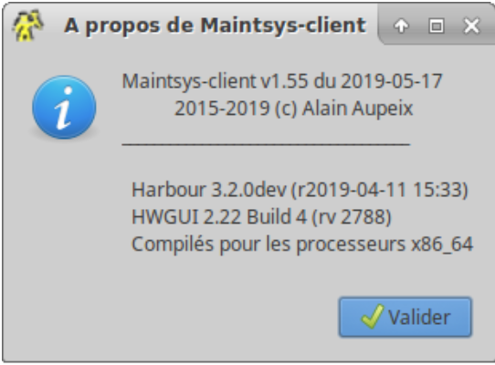
Source Code of hbit1
| File: hbit1 |
/* * Harbour Project source code: * Header file to help catch reserved keywords * * Copyright 2017 Alain Aupeix */#ifndef Harbour_bits
Source Code of hbit2
| File: hbit2 |
#endif /* Harbour_bits */
Source Code of hbv1
| File: hbv1 |
/* * Harbour Project source code: * Header file to help catch reserved keywords * * Copyright 2015 Alain Aupeix */#ifndef Harbour_Version
Source Code of hbv2
| File: hbv2 |
#endif /* Harbour_Version */

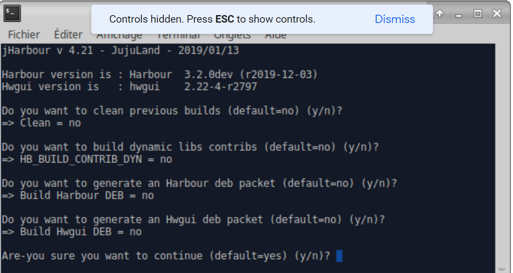
Otherwise, don’t worry about it … but, Viktor recommended to clean before building, so …
Conclusion
In this article I helped you setup your computer environment to start your journey into the Harbour language and, if needed, its gui extension HwGui.
While I don’t think it’s complete, it ought to help beginners …
Harbourly yours …